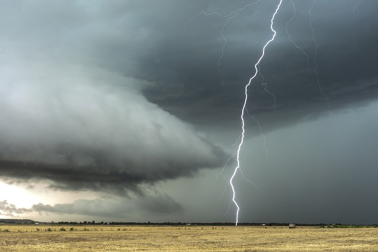
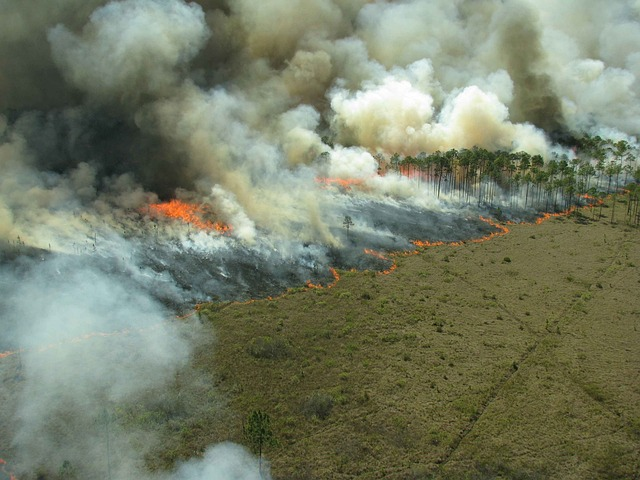

<!DOCTYPE html>
<html lang="en">
<head>
    <meta charset="UTF-8">
    <meta name="viewport" content="width=device-width, initial-scale=1.0">
    <link rel="stylesheet" href="causas.css">
    <title>Causas</title>
</head>
<body>
    
</body>
</html>
    <title>Causas das Queimadas</title>
</head>
<body>
    <header>
        <h1>Causas</h1>
        <nav>
            <ul>
                <li><a href="index.html">Início</a></li>
                <li><a href="causas.html">Causas</a></li>
                <li><a href="consequencia.html">Consequências</a></li>
                <li><a href="prevencaoecombate.html">Prevenção e Combate</a></li>
                <li><a href="galeriadefotos.html">Galeria</a></li>
                <li><a href="contato.html">Contato</a></li>
            </ul>
        </nav>
    </header>
    
    <main>
        <section>
            <h2>Causas Naturais:</h2>
            <p>As queimadas de causas naturais são aquelas onde não há interferência humana.
                Por exemplo as que tem a sua origem por meio de raios.
            </p>
            
        </section>

        <section>
            <h3>Causas Antópricas:</h3>
            <p>Expansão da fronteira agrícola: A conversão de florestas em áreas agrícolas, como pastagens e plantações de soja, exige o uso do fogo para limpar o terreno.</p>
            
        </section>

        
    </main>
       
        
    </main>

    <footer>
        <p>© 2024 Queimadas - Todos os direitos reservados.</p>
    </footer>
</body>
</html>